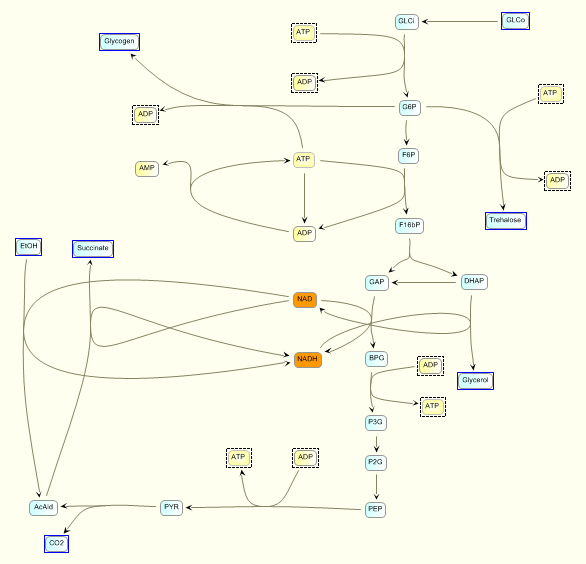
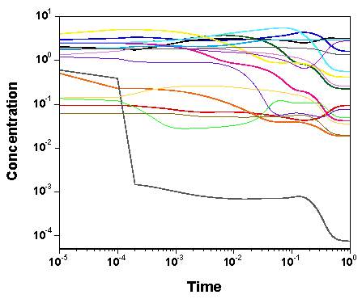

Example (left) of SBML model (yeast glycolysis, renderred by JDesigner) and
GNU MCSim simulated time course of the model's chemical species (right).
This is from "GNU MCSim: Bayesian statistical inference for SBML-coded
systems biology models" submitted to
Bioinformatics.
Supplementary material
for that work, demonstrating MCMC sampling, optimal design and multilevel
modeling, can be found
here.
What is GNU MCSim?
GNU MCSim is a simulation package, written in C, which allows you to:
You may want to read the User's Manual
online before attempting to use GNU MCSim.
Check also the User's Manual update file provided with the source code
for last minute updates and tips.
How do I get GNU MCSim?
Download version 5.3.0 of MCSim (MCSim-v5.3.0.tar.gz, 1.15 MB, 12/01/09)
We provide a gzipped tar archive which contains:Installation
To install GNU MCSim, you will need a C compiler and linker to compile the sources and obtain executables.Contacts
You can contact us by e-mail (fredomatic[on]free.fr) for more information, comments about this page, or if you need further help.Public Lists
Three public mailing list on GNU MCSim are available. We recommend using the gmane portal which has spam controlValidation report
A PDF software validation report for version 5.0.0 can be found here. (The bug with the half-normal distribution it mentions has been fixed in version 5.1.0 and later versions.)
Links
License
GNU MCSim is free software; you can redistribute it and/or modify it under the terms of the GNU General Public License as published by the Free Software Foundation; either version 2 of the License, or (at your option) any later version. This program is distributed in the hope that it will be useful, but WITHOUT ANY WARRANTY; without even the implied warranty of MERCHANTABILITY or FITNESS FOR A PARTICULAR PURPOSE. See the GNU General Public License for more details.